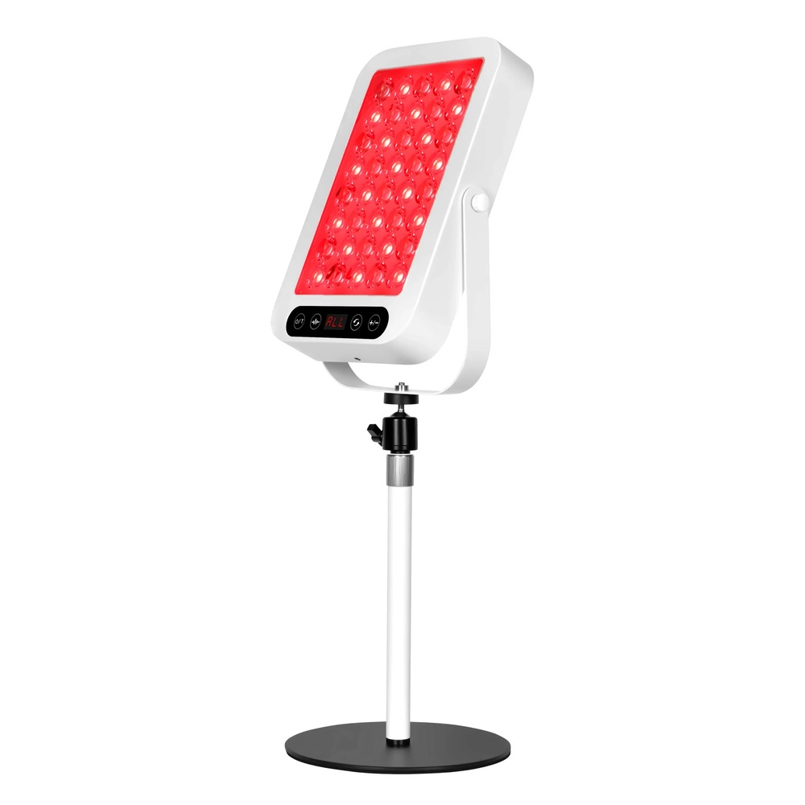
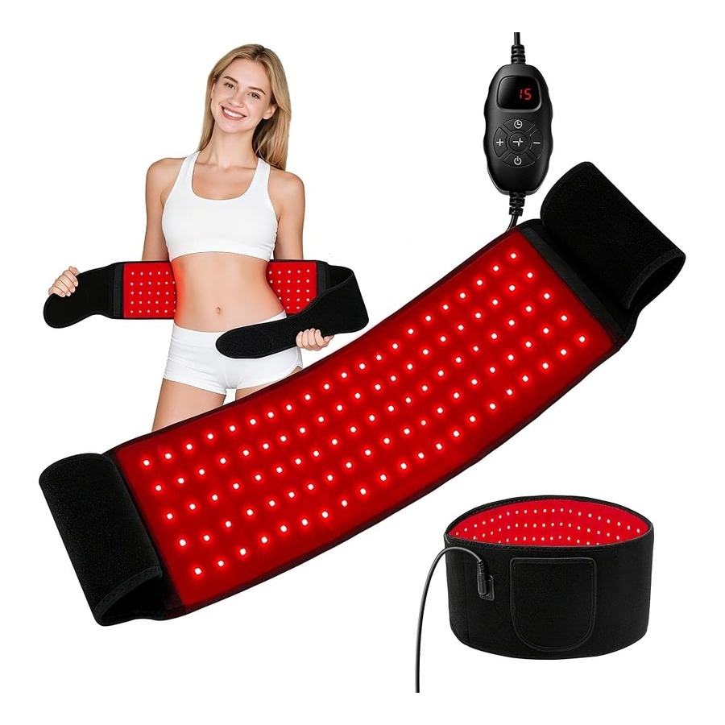
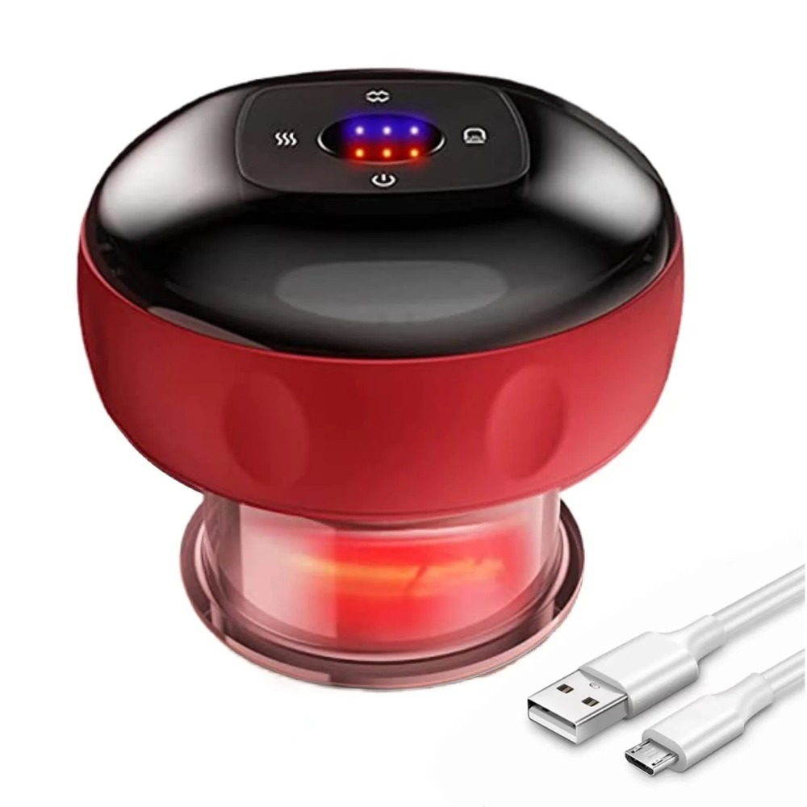
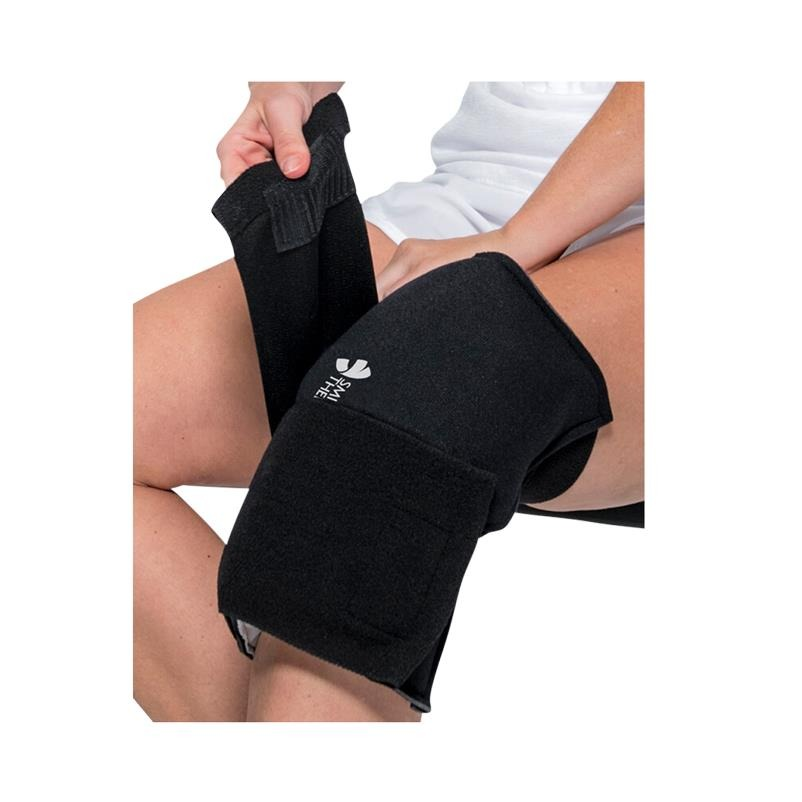

Red Light Therapy Panel 660nm 850nm vs. Therapy Belt Wrap: Which Recovery Setup Do You Need?
Comparing high-irradiance clinical desktop red light panels against flexible neoprene 660nm/850nm wraps, electric cupping sets, and knee cryo-compression sleeves.
Photobiomodulation using 660nm deep red and 850nm near-infrared (NIR) wavelengths has become a cornerstone of daily recovery for endurance runners and strength athletes. But should you choose a stationary Red Light Therapy Panel 660nm 850nm or a wrap-around Red Light Therapy Belt 660nm 850nm?
1. When to Use the LumiRed Clinical Desktop Panel
The LumiRed Red Light Therapy Panel 660nm 850nm delivers >105 mW/cm² of focused optical irradiance across a wide treatment zone. Placed on a nightstand or desk, it provides contact-free full-torso, facial circadian, hamstring, or dual-knee illumination while you stretch or wind down before sleep.
2. When to Wrap with the InfraFlex Belt or CryoSleeve
For targeted joint capsules—like wrapping directly around a sore patellar tendon, Achilles, or lumbar spine while working on the couch—the flexible InfraFlex Red Light Therapy Belt 660nm 850nm places triple-chip LEDs flush against the skin. Alternate acute post-run cold compression using the CryoSleeve Knee Ice Pack Wrap Cold Compression with evening red-light sessions and ThermoCup Electric Cupping Therapy Set decompression for complete tendon care.
Recommended HYROX® Race Apparel & Recovery Hardware




More Hybrid Training & Recovery Guides
- Best HYROX Shirts (2026–2027): Breathable AeroMesh™ Race Tops, City Editions & Pump Covers (6 min read)
- 2026–2027 North America Functional Race Calendar: Dallas, Chicago, Anaheim & Miami Turf Pacing Guide (7 min read)
- How to Cut 3 Minutes Off Your Roxzone Transitions & 1,000m Compromised Running Splits (6 min read)
- Heavy Sled Push & Sled Pull Survival Protocol: Foot Placement, Rope Technique & Quad Flushing (5 min read)
- The 7-Day Race Week Taper, Electrolyte Loading & Post-Race Cold Plunge Timeline (6 min read)
- The Complete 8-Station Functional Race Day & Recovery Checklist (6 min read)
- The Contrast & Red-Light Recovery Protocol for Hybrid Runners (5 min read)
- Heavyweight Pump Covers vs. Race-Weight Tees: How to Layer for Training (4 min read)
- Bulletproofing Knees, Shins & Grip for Compromised Running (5 min read)
- How to Build an Apartment Mobility & Recovery Corner Under $250 (4 min read)
- Weighted Training Vest 20lb Protocol: Murph Prep, Rucking & Compromised Running Intervals (6 min read)
- Breathing Lung Trainers & Chest-Strap Monitors: How to Stop the Metaboreflex in Hybrid Races (5 min read)
- How to Never Drop the Kettlebells: Farmer-Carry Grip Handles, Liquid Lifting Chalk & CNS Testing (5 min read)
- The Destination Race Carry-On Packing System: Collapsible Foam Roller, Carbon Shoe Vault & Duffle (5 min read)
- The Ultimate Lower-Leg Flushing Stack: Air Compression Recovery Boots, EMS Foot Mat & Smart Cupping (6 min read)